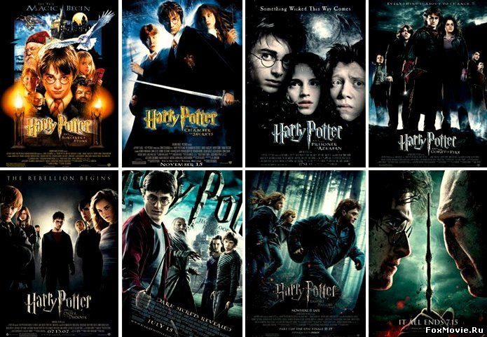

Так же, хочу рассказать вам про сайт, где каждый может почувствовать себя волшебником, и где полностью вся информация посвящена миру Гарри Поттера - это сайт pottermore. В нём вы можете выбрать свой факультет, выбрать свою волшебною палочку и даже узнать, какой у вас патронус. Полностью рекомендую вам этот сайт,особенно тем, кто такой же Поттероман как и я)
 Pottermore — официальный веб-сайт Гарри Поттера, открытый для всех 14 апреля 2012 года. Это совместное предприятие Джоан Роулинг и Sony, оно представляет собой различные данные о серии Гарри Поттера с интерактивными возможностями, новые дополнительные замечания от Роулинг и продажу электронных книг. Миллион людей получили возможность взглянуть на вид сайта перед его официальным запуском 31 июля 2011 года.
Каждый в этом мире ищет себя, ищет своё место, просто пытается быть частью всего этого. И я не исключение. Я всегда шёл по своему пути, не знаю что впереди, но всегда надеялся на то, что мне удастся стать частью этого всего. И порой, отчаившись от всего, что происходило в моей жизни, только Гарри Поттер мог мне помочь с этой болью. Только Гарри, Рон и Гермиона могли вытащить меня из тьмы, що сеялась в моей душе и сделать мою жизнь вновь красочной и яркой. Правда, каждый, кто сейчас это читает, я хочу донести до вас, что Гарри Поттер - не просто франшиза для меня. Я не просто поехавший на этой истории. Этот мир дал мне очень многое, это не просто сказка для меня. Он взростил во мне силу воли и возможность быть таким как я есть. Надеюсь что каждый понял мой Message. отправляйтесь на Pottermore, там очень много крутых шняг, так же приглашаю вас на другие части моего мира(кто в них ещё не был). Спасибо, что вы со мной) Ссылка на Pottermore